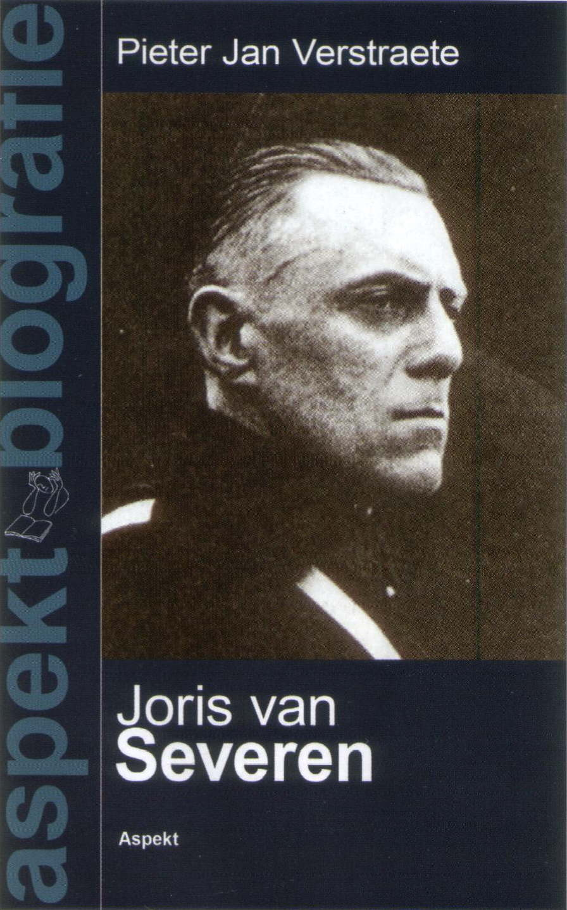

> nieuwsbrief > 2010- nr 1
Inhoud
Hernieuwen ledenbijdrage 2010
Eens te meer nadert de jaarwisseling met
rassé
schreden. Voor de penningmeester brengt dit mee om ervoor te zorgen dat
de
hernieuwing van de bijdragen andermaal vlot verloopt.
In ruil voor een ongewijzigde basisbijdrage
van 25 verzekert u zich ook in 2010 van een abonnement op onze Nieuwsbrief Joris van Severen en van
het reeds 14e Jaarboek Joris van
Severen zijn persoon, zijn gedachten, zijn invloed, zijn werk. Als
steeds
hopen we er andermaal op dat eenzelfde aantal leden spontaan deze
basisbijdrage
afronden tot het ronde bedrag van 30. Zij immers maken het ons
mogelijk
om extra-initiatieven te ontwikkelen, naast de Nieuwsbrief
en het Jaarboek. Bijliggend
betaalformulier heeft slechts de bedoeling het u makkelijk te maken. De
penningmeester dankt bij voorbaat voor een vlotte afhandeling.
Vermeld in dit geval, als mededeling op uw
overschrijving: jaarboek 14 + biografie.
Titel
Aspekt-uitgave:"Joris van Severen: een
biografisch portret"
Reeks: Aspekt-biografieën
- Omvang 160 pp - Formaat 13,5 x 21,5
Prijs afzonderlijk: 16,95 + 3
verzendkosten
= 19,95
Prijs besteld samen met het Jaarboek
Joris van Severen 2010: 12
. De ledenbijdrage beloopt dan 25 + 12
= 37 .

Pieter
Gemeenteraadslid Kurt Himpe
(N-VA) stelt voor om in Izegem een straat naar Jules Declercq te
noemen.
Izegemnaar Jules Declercq (1897-1955) speelde in de jaren van het
interbellum
op het sociale vlak een belangrijke rol.
Juul Declercq sloot zich in
1919 aan bij de eerste christelijke vakbond in Izegem en kwam er als
vrijgestelde
in dienst. Toen het in 1925 tot een breuk kwam in het Izegemse
christelijk
vakverbond richtte hij met enkele medestanders het Vrij Kristen
Syndicaat t
Verleden Leert op, waaruit later het Vlaamsch Nationaal Vakverbond
groeide. In
1930 telde het vakverbond in West-Vlaanderen 45 afdelingen en 3000
leden.
Dat zijn inzet niet
onbelangrijk was, blijkt uit diverse publicaties. Zo verscheen in 2000
over
Jules Declercq een boek, geschreven door Jean-Marie Lermyte en Antoon
van
Severen. Ook de befaamde Encyclopedie van
de Vlaamse Beweging besteedde, zowel in de eerste uitgave in 1973
als in de
tweede uitgave in 1998, aandacht aan de Izegemnaar. Ook in verscheidene
andere
publicaties werd de rol die Jules Declercq op het sociale vlak speelde
onder de
loep genomen, stelt raadslid Himpe
Jules Declercq woonde met zijn
gezin een kwarteeuw in de Slabbaardstraat-Noord. Aan de gevel van het
huisnummer 84 werd in 1992 een gedenksteen onthuld ter herinnering aan
de
Vlaamse voorman. In de buurt van deze woning zijn er twee
verkavelingen in
volle ontwikkeling, namelijk de WVI-verkaveling tussen de
Slabbaardstraat-Noord
en de Meensestraat en de verkaveling op de site Callens. Ik vraag het
stadsbestuur om bij de straatnaamgeving in deze verkavelingen één van
de
straten naar Jules Declercq te noemen, aldus gemeenteraadslid
Himpe.Het
N-VA raadslid vraagt het
stadsbestuur tijdens de gemeenteraadszitting van 5 oktober om bij de
straatnaamgeving rekening te houden met deze suggestie.
Een aanwinst voor de archieven rond het Verdinaso
De lezers van onze Nieuwsbrief
weten uiteraard al lang dat het Documentatie Centrum Joris van Severen
dat
destijds te Aartselaar gevestigd was, een grote buit had verzameld
betreffende documenten met betrekking op Joris van Severen, het
Verdinaso en
tal van zaken die er direct of indirect mee verband hielden. En de
getrouwsten
onder hen weten ook dat inmiddels dit rijke archief ondergebracht werd
in de
Leuvense Universiteit, waar het zorgvuldig bewaard wordt ten behoeve
van
historische vorsers, studenten en (hopelijk ook) politici.
Het bestuur van ons Centrum is thans
verheugd te
kunnen bekend maken dat ook het uitgebreide archief van wijlen
ere-notaris
André Belmans door de familie afgestaan werd aan de Universiteit. Het
zal er
als een nevenarchief André Belmans ter inzage liggen. André Belmans
was,
zoals algemeen geweten, niet alleen een dinaso van het eerste uur, maar
ook
lange jaren, en dit sinds het begin van de bezetting, een der
voornaamste
medewerkers en steunpilaren van Louis Gueuning.
Zijn bijzonderste verdienste ligt echter in
het feit
dat hij zich daartoe niet beperkt heeft, maar dat hij vele jaren in
talrijke
brochures, notas en andere geschriften de theorie en de praxis van het federalisme (in zijn tegenstelling
met het nationalisme) bestudeerd heeft. Ook voerde hij met de
belangrijkste
politici uit onze land daarover een diepgaande correspondentie. Het
valt te
vrezen dat in dit land weinig politici zich dergelijke moeite getroost
hebben!
Hoevelen onder hen weten bij het uitspreken van het woord federalisme
eigenlijk waarover het gaat? Dat dit alles thans ook voor studie
beschikbaar is
en dat ons Centrum daartoe het zijne heeft bijgedragen, verheugt ons
ten
zeerste.
De
Tilburgse
Hogeschool, het
Diets-nationalisme en het solidarisme
Toen ik bezig was met mijn
onderzoek voor
mijn jaarboekbijdrage over Dinaso-studenten in Nederland1
heb ik
getracht zoveel mogelijk gedenkboeken te raadplegen. Daarbij had ik mij
tot
doel gesteld alle universiteiten en hogescholen met een noemenswaardige
Dinaso-activiteit te onderzoeken. Tijdens mijn zoektocht stuitte ik in
het
gedenkboek van de Tilburgse Rooms-Katholieke studentenvereniging
Sint-Olof
echter niet op enige sporen van noemenswaardige Dinaso-activiteit.
Destijds heb
ik mij in het kader van het onderzoek daarbij neergelegd.
Later ben ik echter bij
toeval gestoten op
een zeer rijke bron, te weten het eerste deel van de geschiedenis van
de
Katholieke Hogeschool Tilburg van de hand van Hans Bornewasser.2
Deze bron had de volgende opmerking over de invloed van het Dinaso aan
de
Tilburgse hogeschool: De beheerder van de hogeschool schreef het toen
aan
diens gezag toe dat de meeningen en gedurfdheden der z.g. jongeren
-men denke
aan de binnenkerkelijke-antiklerikale invloed van Roeping (Gerard
Knuvelder) en De Gemeenschap maar ook van nog meer rechtse
stromingen
als Heemvaart en het zelfs fascistische Verdinaso op
vooral
Nijmeegse, Amsterdamse en Delftse katholieke studenten- in Tilburg zo
goed als
geen weerklank vonden.3
De hierboven aangehaalde
passage duidt op
de rol van father Padberg, de moderator van Sint-Olof, in het
onderdrukken van
het Diets nationaal-solidarisme dat onder grote scharen Katholieke
studenten
razend populair was. Hiermee is eens te meer bewezen dat het succes
afhankelijk
was van sterke persoonlijkheden onder de studenten en de zwakte van de
moderators. Padberg was een man met veel autoriteit én charisma, wat
blijkt uit
deze zinsnede uit zijn afscheidsrede: velen waren prachtkerels, over
niemand
heb ik me hoeven schamen. De volgzaamheid als ik iets afkeurde of als
ik iets
anders wenste was prompt, voor zover ik weet.
Betekende dit dat er geen
enkele politieke
activiteit was aan de Tilburgse Hogeschool of anderszins een
intellectuele
voedingsbodem aanwezig was voor het Verdinaso? Deze vraag dient beslist
ontkennend te worden beantwoord. Het hierboven vermelde gedenkboek
geeft
namelijk een mooie inkijk over hoe er destijds zoal werd gedacht en
welke discussies
een rol speelden onder de studenten. Aan de hand van de feiten die ik
heb
kunnen achterhalen uit het gedenkboek zal ik willen aantonen dat het
Diets-nationalisme en het solidarisme zeker geen randverschijnselen
waren, maar
juist zeer aandachtig werden bestudeerd en besproken.
Brabant en Groot-Nederland
De Katholieke Hogeschool
Tilburg werd in
1927 gesticht met een duidelijk Katholiek en Brabants stempel. De
provincies
Noord-Brabant en Limburg hadden aan het
begin van de 20e eeuw geen enkele instelling voor hoger onderwijs en
het
Katholieke volksdeel bleef verstoken van een eigen universiteit. Pas in
1923
kwam er in Nijmegen een uitgesproken Katholieke Universiteit, maar
wederom lag
deze universiteit boven de grote rivieren. Er kwam vanuit met name
Brabant de
roep om een eigen hogeschool die zou dienen bij te dragen aan de
economische
ontwikkeling van dit achtergebleven gebied. In dit klimaat van
Brabantse en
Katholieke emancipatie werd de Katholieke Hogeschool Tilburg gesticht.
Er leefde van meet af aan
onder de
Katholieke studenten in Tilburg een cultureel Brabantisme dat zich
ook
vertaalde in het ruimer kader van het Groot-Neerlandisme dat in die
dagen zeer
courant was het Dietsch Studenten Verbond (DSV) zat in de lift en
beleefde
omstreeks 1929/1930 zijn hoogtepunt. Ook in Tilburg was er dermate veel
enthousiasme voor de Groot-Nederlandse gedachte en het DSV dat
Sint-Olof in mei
De Brabantse gezindheid van
Sint-Olof
leidde ook tot een confrontatie met andere Rooms-Katholieke
studentenverenigingen. Zo stuurde het kersverse Sint-Olof in 1928 geen
afvaardiging naar de twaalfde Roomsche Studentendag te Nijmegen
aangezien het
Brabantsch Studentengilde uit Wageningen een sectievergadering was
geweigerd.
Deze Brabantse solidariteit was kenmerkend voor de strijdlust onder de
Brabantse studenten in Tilburg om zich niet in de hoek te laten zetten
door de
overwegend noordelijke Rooms-Katholieke studenten. Uiteraard werden de
plooien
spoedig gladgestreken, maar de Brabanders hadden hun tanden laten zien.
Quadragesimo Anno in Tilburg
De Tilburgse hogeschool was
in haar opzet
als handelshogeschool vooral een economisch ingestelde
onderwijsinstelling. Dit
betekende zeker niet dat sociale vraagstukken geen aandacht kregen, wel
integendeel: in de sociale week op het seminarie te Rolduc (Limburg)
traden
maar liefst drie hoogleraren op als sprekers. De pas verschenen sociale
encycliek Quadragesimo Anno vormde daarbij een dankbaar
instrument om de
vrije concurrentie als ordeningsmechanisme ter discussie te stellen,
voor zover
dat nog niet was gebeurd naar aanleiding van de beurskrach van 1929.
De hierboven genoemde
pauselijke encycliek
werd tijdens de crisistijd enthousiast onthaald en vormde in die dagen
de
sociale bijbel van de Rooms-Katholieken in Nederland. De grondslagen
voor
deze encycliek waren al eerder gelegd door filosofen zoals Heinrich
Pesch, die
het begrip solidarisme lanceerden. Tilburgse hoogleraren zoals
professor
Cobbenhagen waren reeds in deze geest gevormd en de pauselijke
encycliek vormde
voor dezen slechts een aansporing voor het promoten van de
corporatieve
staatsmaatschappij.
Toen de daadwerkelijke auteur
van
Quadragesimo Anno, de Oostenrijkse monnik Oswald von Nell-Breuning, in
1933
naar Tilburg kwam om de studenten tijdens de Sint-Olof-festiviteiten
toe te
spreken werd hij met een uitzinnig enthousiasme ontvangen. Uiteraard
handelde
zijn toespraak over het corporatisme, maar hij sprak tegenover een
publiek dat
dit evangelie reeds had vernomen in de collegebanken. Desalniettemin
was hij zo
populair in de Tilburgse hogeschool dat men hem tot doctor honoris
causa had willen
promoveren, als zijn geestelijke orde hem dat had toegestaan.5
Besluit
Ondanks het feit dat het
Verdinaso in de
jaren 30 geen vaste voet aan de grond kreeg aan de Tilburgse hogeschool
waren
de standpunten van de politieke beweging van Joris van Severen
allerminst
omstreden. De Tilburgse studentenvereniging bekende zich in 1928 en
bloc
tot de Groot-Nederlandse gedachte en in 1933 werd de solidaristische
boodschap
van Oswald von Nell-Breuning, de auteur van Quadragesimo
Anno, enthousiast omarmd aan de hogeschool. De studenten waren dus
wel
degelijk bekend met de idealen die ook door het Verdinaso werden
verkondigd. De
voedingsbodem voor de politieke boodschap van het Verdinaso was
aanwezig aan de
Tilburgse hogeschool, maar het hing van andere vaak lokale en
persoonlijke -
factoren af of het politieke zaad kon ontkiemen.
Noten
1 R.
Bruijns, Dinaso-studentenactie in Nederland in Jaarboek
Joris van Severen 11, Ieper,
2007.
2 H.
Bornewasser, Katholieke Hogeschool
Tilburg, deel: I, 1927-1954, Baarn, 1978.
3 H. Bornewasser,
a.w., blz. 124.
4 Idem, blz. 129.
5 Idem, blz. 144.
Marc
de Schrijver (november
1921-september 2009)
Jong-dinaso. Hij heeft een voorname rol gespeeld in de welbekende
Aloude
Schuttersgilde Den Crans te Antwerpen, waarvan hij Kanselier was. Ik
dit kader
heeft hij werk gemaakt van de Europese verbroedering en samenwerking
van
schuttersgilden. Hij heeft menig maal deelgenomen aan de bedevaart naar
Abbeville, destijds ingericht door Jef Werkers.
In de Imeldakliniek van Bonheiden is Rik
Wegge op 86-jarige leeftijd overleden. Rik (15 april 1924-28
november 2009)
was Antwerpenaar van geboorte, maar woonde al 27 jaar in Heist. Rik
hield heel
wat tentoonstellingen overal ten lande. Vanaf 1967 werd hij lid van
kunstkring
Hnita. Zes jaar geleden kreeg hij een retrospectieve in cultuurcentrum
Zwaneberg. Rik Wegge was reeds sinds jaar en dag lid van ons
Studiecentrum.
Dries
Dekeyser (Oostende
°14 juni 1926 - Oostende
4 december 2009), Jong-Dinaso, die tot op zijn laatste dag trouw
gebleven is
aan de idealen van zijn jeugd. Hij was ook een trouw
Abbeville-bedevaarder en
lid van ons Studiecentrum Joris van Severen. Zijn overlijdensbericht
was
getooid met het Dinaso-embleem.
Uit:
Geschiedschrijver
van zijn tijd
een
vraaggesprek met
In het meinummer 2009 van Tijdingen uit Leuven
lazen we
een uitgebreid en boeiend vraaggesprek met de historicus
We brengen Saerens tekst
zonder verdere commentaar. De
aandachtige lezer(es) van respectievelijk onze Jaarboeken en
Nieuwsbrieven
Joris van Severen, zullen vanzelf wel merken hoezeer ook Saerens
veelal zij
het niet steeds - een aandachtige lezer daarvan blijkt te zijn (ook al
komt wat
hij daar uit put om onverklaarbare redenen niet in aanmerking voor een
voetnoot-verwijzing).
De noten van de auteur
werden door ons hernummerd in functie
de geciteerde tekst. Met betrekking tot bepaalde aspecten kan een en
ander met
vrucht parallel gelezen worden aan onze brochure Het Verdinaso,
Antisemitisme
und kein Ende? die onze leden samen met
het jaarboek 2009 toegestuurd kregen. (
U ordende als
wetenschappelijk medewerker
van het
KADOC de archieven van Ast Fonteyne (1906-1991), toneelacteur en
-regisseur en
voordrachtkunstenaar en -docent, en ook die van jurist en
Congo-specialist
Jozef van Bilsen (1913-1996). Zij waren beiden prominente leden van het
Verbond van Dietsche Nationaal Solidaristen of Verdinaso, een
politieke
organisatie die bestond van 1931 tot
1941 en die in een aantal van uw historische studies aan
bod
komt. Vanwaar uw belangstelling voor het Verdinaso, en kunt u deze
beweging
nader situeren?
Mijn belangstelling voor het Verdinaso is
er
gekomen via mijn licentiaatsverhandeling over de houding van de
katholieke
krant De Gazet van Antwerpen ten opzichte van de Joden tussen
de Machtübernahme
van Adolf Hitler (1889-1945) in Duitsland in januari
1933 en het begin van de Tweede
Wereldoorlog in België in mei
Het Verdinaso was een van de
eerste
organisaties in België die een theoretisch concept formuleerde om zijn
antisemitisme te motiveren.1 Niet toevallig handelde een
van mijn
eerste meer uitvoerige historisch-wetenschappelijke publicaties precies
daarover, terwijl het thema antisemitisme en Vlaamse Beweging toen in
brede
kringen nog zo goed als taboe was.2 Bij mijn historisch
onderzoek
betreffende het Verdinaso stootte ik op een aantal bijzonder
intelligente personen, die tegelijk regelrechte onzin uitkraamden over
Joden.
Zo bijvoorbeeld de rabiaat antisemitische West-Vlaamse mijningenieur
Jef de
Langhe (1907-1998), die
tijdens de Tweede Wereldoorlog medestichter en een tijdlang leider was
van de Algemeene
SS-Vlaanderen.3 Ook
kwamen nogal wat gewezen leden van het Verdinaso
als gewelddadige Jodenjagers tijdens de Tweede Wereldoorlog terecht in
de zwartste
collaboratie. Daarnaast was er een eerder beperkte groep van
voormalige dinasos
die in het verzet belandden. Nog andere ex-dinasos
namen tijdens de bezetting een attentistische
houding aan of hielden zich volledig afzijdig. Men kan stellen dat -
afgezien
van lokale verschillen - het gros van de Vlaamse vroegere dinasos tijdens
de Tweede Wereldoorlog lid werd van de Algemeene SS-Vlaanderen en/of
de
DeVlag.4 Daarnaast traden - behalve tot de Eenheidsbeweging
van
het V/aamsch Nationaal Verbond - nogal wat voormalige dinasos
toe
tot de Nationale Landbouw- en Voedingscorporatie en de Nationale
Arbeidsdienst,
de voorloper van de Vrijwillige Arbeidsdienst voor Vlaanderen.
Het soldateske Verdinaso was
onmiskenbaar een
product van het streven naar een rechts-autoritaire Nieuwe Orde, dat
zich in heel Europa manifesteerde tijdens het interbellum. De ietwat
vergoelijkende term conservatieve revolutie vermijd ik
liever.
De charismatische stichter en leider van
het Verdinaso,
de goeddeels in het Frans opgevoede West-Vlaamse notariszoon en
dandy Joris
van Severen (1894-1940), oefende een aantrekkingskracht uit op
een
amalgaam van
personen met uiteenlopende achtergronden, gaande van intellectuelen en bourgeois
tot lower middle class en van arbeiders tot toekomstige
priesters.
De ideologie van het Verdinaso was
een
conglomeraat van ideeën uit diverse (rechtse) politiek-maatschappelijke
en
filosofische stromingen. De historicus Eric Defoort (°1943), die in
zijn jonge
jaren een kortstondige neo-dinaso-periode
beleefde, gebruikte daarvoor de omschrijving leerstellige bazaar.
Sommige
dinasos - in het bijzonder Joris van Severen zelf - waren
eerder
Latijns georiënteerd en sterk beïnvloed door Charles Maurras
(1868-1952) en
diens Action Française. Anderen neigden meer naar het
Italiaanse
fascisme, met hier en daar een vage belangstelling voor het
Oostenrijkse autoritaire
corporatisme. Aanvankelijk was de völkisch en Germaans
geïnspireerde
vleugel, die onder nationaal-socialistische en racistische invloed
stond, de
dominante stroming binnen het Verdinaso. Een deel van de dinasos
voelde
zich vooral aangetrokken door de stijl, de orde en de
cultuur die
Van Severen uitstraalde en etaleerde, inclusief de aandacht voor een
beschaafde
en zuivere Nederlandse taal. Zij beschouwden zich als leden van een
aristocratische beweging, die in hun ogen niets te maken had met wat
zij
omschreven als het bierflamingantisme van de andere
Vlaams-nationalistische organisaties. De conservatief-katholieke
journalist en
publicist Charles dYdewalle (1901-1985) noemde Van Severen overigens
ooit le
premier flamingant bien coiffé. Ondertussen werd het Verdinaso
via
de opeenvolgende Nieuwe Marsrichting(en) van Joris van
Severen, die
onder meer de Walen een aparte plaats toebedeeld(en) in het op te
richten Dietse
of Bourgondische Rijk, vanaf
het midden van de jaren 1930 geleidelijk meer
en meer salonfähig
in brede katholieke en Belgicistische kringen.
Het was - gezien mijn voorkennis - niet
helemaal
toevallig dat men mij in het KADOC de inventarisatie van de
archieven
van Ast
Fonteyne en Jozef van Bilsen
toevertrouwde en ik er meewerkte
aan een
boek over Fonteyne op vraag van de Stichting Ast Fonteyne.5 Een en ander had
allicht ook te maken met mijn persoonlijke interesse voor cultuur,
naast mijn
belangstelling voor politiek. Ik ben daarna nog begonnen met de
ordening van
het archief van literator Bert Peleman (1915-1995),
eveneens lid van het Verdinaso en
die tijdens de Tweede
Wereldoorlog op verschillende manieren betrokken bij de collaboratie.
Door mijn
overgang naar het SOMA heb ik dat project echter niet kunnen
afmaken.
Hoe verklaart u
het feit dat nogal wat
voormalige
dinasos later carrière maakten in diverse domeinen van het
maatschappelijk
leven?
Het Verdinaso telde op het hoogtepunt van
zijn bestaan maximaal 3500 tot
4000 leden. De historische betekenis van het Verdinaso is
echter in
belangrijke mate gelegen in het feit dat een aantal voormalige dinasos
later
een opmerkelijke beroepsloopbaan uitbouwde. Over het ledenbestand van
het Verdinaso
zou weliswaar nog een diepgaand prospografisch onderzoek dienen te
worden
verricht. Maar voor een aantal onder hen speelde alvast mee dat zij met
een
verzetsaureool uit de Tweede Wereldoorlog kwamen. Van de andere kant
waren
sommigen enkel geheim lid van het Verdinaso geweest. Bovendien
oefende
de beweging van Joris van Severen een bijzondere aantrekkingskracht uit
op
bepaald segment van de Vlaamse universitaire intelligentsia, misschien
zelfs
het meest van alle toenmalige Vlaams-nationalistische organisaties.
In het naoorlogse katholieke Vlaanderen
vormde een Nieuwe
Orde-gezind verleden overigens
geen belemmering voor een succesvolle loopbaan. De herinnering aan de
Tweede
Wereldoorlog werd er na verloop van tijd vrijwel gereduceerd tot de
zogeheten mateloze
repressie. De herinnering aan het verzet en aan de door de
Duitsers
en de Belgische collaborateurs vervolgden kreeg minder aandacht. Er
bestonden
trouwens nogal wat katholieke en/of flamingantische netwerken. Zo
doceerde de
hiervoor al genoemde Jef de Langhe, nadat hij eerherstel had gevraagd
en
gekregen, van 1975 tot 1986 botanische
systematiek aan
de Universitaire Instelling Antwerpen. Zijn racistische
wereldbeschouwing bleef De Langhe ondertussen zijn hele leven trouw.
Kan u deze
historische analyse omtrent het
Verdinaso
en zijn nawerking wat nader toelichten, eventueel met een aantal
voorbeelden?
Het is uiteraard niet de bedoeling om een
soort zwartboek
op te maken. Maar het merkwaardige carrièreverloop van bepaalde oud-dinasos blijft mij - mede
omdat het gaat om een relatief beperkte groep - intrigeren.
Zo was oud-dinaso
Jozef
van Bilsen na de Tweede Wereldoorlog meermaals
kabinetschef
van de christendemocratische minister Pierre Harmel (°1911),
die van juli 1965 tot februari 1966 ook het ambt
van premier bekleedde. In de jaren 1950
publiceerde Van Bilsen daarnaast een opmerkelijk 30
jarenplan voor
de dekolonisatie van toenmalig Belgisch Congo en in 1959-1960
trad hij op als persoonlijk adviseur van de
Congolese nationalist Joseph Kasa-Vubu (1913-1969),
die na de onafhankelijkheid in 1960 de eerste president werd
van de Republiek
Congo. Van Bilsen, die nadien onder meer secretaris-generaal was
van de
Belgische Dienst voor Ontwikkelingssamenwerking, sloot zijn
beroepsloopbaan af als academisch specialist inzake de Derde Wereld
aan
de Gentse Universiteit.
Een relatief groot aantal voormalige dinasos
trad
na de Tweede Wereldoorlog toe tot de Christelijke Volkspartij (CVP).
Zo
waren de oud-dinasos Frantz
van Dorpe (1906-1990), Willem
Melis en Norbert de Witte (1911-1983)
in Sint-Niklaas tijdens de jaren 1960 en 1970
respectievelijk burgemeester, schepen en
arrondissementscommissaris namens deze partij. De gewezen Jongdinaso
Johan
Fleerackers (1931-1989) en
de ex-dinaso Raf Renard (1911-2002)
bekleedden beiden een tijdlang het voorzitterschap van de Vaste
Commissie voor Taaltoezicht namens de CVP. Verder was Jos
van
Orshoven (1917-1999), die
onder de christendemocraat Gaston Eyskens (1905-1988)
directeur-generaal was van de Diensten van
de Eerste Minister, lid geweest van het Verdinaso. Ook de
Vlaams-nationalistische parlementariërs Lode Claes (1913-1997)
en Leo
Vandeweghe (1906-1988) kwamen
uit het Verdinaso. Dat was
eveneens het geval voor de anti-Joods bevooroordeelde Alex (Fritz)
Donckerwolcke (1912-1988), de
voorzitter van de Vlaamse Concentratie (1949-1954),
die na de Tweede Wereldoorlog als eerste
Vlaams-nationalistische partijformatie deelnam aan de
parlementsverkiezingen.
Jezuïet Luc
Versteylen (°1927), later
mede-oprichter van AGALEV, was (geheim) lid van het Jongdinaso.
Ook mensen uit de artistieke en de
culturele sfeer zoals
beeldend kunstenaar en kunstcriticus Maurits Bilcke
(1913-1993),
uitgever Joris Lannoo (1891-1971), kunstfotograaf
Willy Kessels (1898-1974), componist Jef
Vermeiren (1904-1999) en
dichter Karel
Vertommen (1907-1991) waren
lid van het Verdinaso. Net zoals kusthistoricus, etnograaf en
heemkundige Jozef
Weyns (1913-1974),
die vooral bekendheid verwierf als conservator van het Openluchtmuseum
Bokrijk in Genk en Edmond de Clopper
(1922-1998),
die vele jaren voorzitter was van de Vlaamse
Volkskunstbeweging. Voor zijn werk binnen het Internationaal
Europeade-Comité, waarvan hij ook een tijdlang voorzitter was,
ontving De
Clopper in 1994 van de Vlaamse
regering de titel Cultureel Ambassadeur voor Vlaanderen.
Ook de al eerder genoemde ex-dinaso
Bert Peleman, die tijdens de bezetting onder
meer anti-Joodse poëzie publiceerde en die na de Tweede Wereldoorlog
ter dood
was veroordeeld, werd in 1986 voor zijn culturele bedrijvigheid
gehuldigd door
de Vlaamse regering (toen nog Vlaamse executieve). Het extreemrechtse
Vlaams-nationalisme, dat op die manier eigenlijk een officieel
eerbetoon
ontving, reageerde - zoals steeds - verkrampt, rancuneus en
verongelijkt. Toen t Pallieterke vernam
dat
Peleman zijn benoeming tot ridder in de Orde van Leopold
II had
aanvaard, stelde het weekblad verontwaardigd dat een rechtgeaard
Vlaams-nationalist geen staatsmedailles aanvaardt. Toen deze
benoeming
nadien - onder druk van oud-verzetsstrijders en bepaalde Waalse
socialisten -
ongedaan werd gemaakt, reageerde men al even verontwaardigd en luidde
de
conclusie dat de Belgische staat nooit te vertrouwen valt...
Een andere oud-dinaso
die in dit verband vermelding verdient, is Leo Poppe (1911-1997),
de gewezen jeugdleider van de beweging. In
september 1942 bezocht hij als stafleider
van de Nationaal-Socialistische Jeugd Vlaanderen het getto
van de
Poolse stad Lodz. Toen hij er werd geconfronteerd met de mensonwaardige
leefomstandigheden van de Joodse bewoners, was er bij hem geen plaats
voor
medelijden, wel voor misprijzen en tevredenheid. In Argentinië, waar
hij na de
Tweede Wereldoorlog naartoe was gevlucht, stampte Poppe mee een
culturele
infrastructuur voor uitgeweken Vlaamse collaborateurs uit de grond,
onder
andere via het tijdschrift De Schakel-El Laza (1954-1995).
In 1971 ontving
hij van de Vlaamse Toeristenbond de prijs voor de meest
verdienstelijke Vlaming in het buitenland.
Wat het academische milieu betreft dient -
naast Jef
de Langhe en Jozef van Bilsen
- in de eerste plaats de hoogleraar
geschiedenis
Léon van der
Essen (1883-1963) te worden genoemd, die ook lange tijd
secretaris-generaal was van de Leuvense universiteit. Aan het eind van
de jaren
1930 werd hij geheim lid
van het Verdinaso. Na de Tweede Wereldoorlog zetelde Van der
Essen in de
door de Belgische regering opgerichte Commissie voor
Oorlogsmisdaden (1944-1948) en
schetste hij als
expert op het Proces van Neurenberg (1945-1946)
een beeld van het Duitse bezettingsregime in
België tijdens de Tweede Wereldoorlog. Volgens de SOMA-studie Gewillig
België uit 2007 was
Van der Essens
getuigenis tijdens het oorlogstribunaal in deze Zuid-Duitse stad
beperkt en
inhoudelijk zwak. Over de Jodenvervolging repte hij met geen woord.
Vermeldenswaard is nog dat de latere Leuvense hoogleraar Oosterse
filologie
Albert-Joris
van Windekens (1915-1989) tijdens
zijn studententijd lid was van
het Verdinaso.
Kan u iets meer
zeggen over het belang en
de betekenis
van het Verdinaso buiten Vlaanderen, met name in Franstalig België en
in
Nederland?
Een aantal figuren uit de meestal
Franstalige
Belgische adel voelden zich gecharmeerd door Joris van Severens persoon
en zijn
organisatie. Zo werd Van Severen eind 1936 uitgenodigd op een
colloquium in de Sint-Andriesabdij
bij Brugge naar aanleiding van de presentatie van de publicatie Aristocratie
de Demain van baron Jean-Charles Snoy et dOppuers (1907-1991),
die van 1968 tot 1971 parlementslid
en minister van financiën was namens de
christendemocraten. In 1938 werd de Verdinaso-leider
door baron Snoy et dOppuers persoonlijk
geïnviteerd voor een vergadering van de Association de
Ook in Nederland verwierf Van Severen enige
aanhang,
vooral in katholieke middens. Onder anderen de dichter en essayist
Henri
Bruning (1900-1983), de
later talloze malen gehuldigde prozaïst, dichter en criticus Pierre
Henri
Dubois (1917-1999) en de
Norbertijn Werenfried
van Straaten (1913-2003), die nadien bekendheid
verwierf
als de Spekpater van
Oostpriesterhulp, behoorden tot de
Nederlandse afdeling van het Verdinaso, evenals de historicus
Henk van
der Heijden (°1916), die
in 1996 aan de Leuvense universiteit een doctoraat behaalde met een
studie over
De oude kaarten der Nederlanden, 1548-1794. Zelfs de van huis
uit
protestantse, socialistische eerste minister van Nederland Joop den Uyl
(1919-1987) sympathiseerde in
zijn jeugd kortstondig met de rechts-autoritaire beweging van Joris van
Severen.
In diverse journalistieke en
wetenschappelijke
publicaties werd en wordt er nogal eens op gewezen dat het Verdinaso - nog afgezien van
de
maatschappelijke carrières van diverse ex-leden - een niet
onbelangrijke
(intellectuele) nawerking uitoefende nadat de organisatie in 1941 had
opgehouden te bestaan. Kunt u daarover iets meer vertellen? 6
De (postume) maatschappelijke impact van
het Verdinaso
mag niet worden overschat of overdreven. Maar het is hoe dan ook zo
dat
Joris van Severen - mede door zijn
tragische dood in het Noord-Franse Abbeville op 20 mei 1940
- al snel een soort van cultstatus verwierf,
Vrijwel onmiddellijk na de Tweede Wereldoorlog werden verschillende neo-dinaso-organisaties opgericht,
zowel in Nederlands- als in Franstalig België. In nogal wat naoorlogse
Vlaams-nationalistische jeugdbewegingen werd de herinnering aan Van
Severen
levendig gehouden. Dat gebeurde ook in het kortstondige,
solidaristische
tijdschrift Branding (1947), waaraan
onder meer Herman Todts (1921-1993) Manu
Ruys (°1924), Frans van
Mechelen (1923-2000) en
de al genoemde Edmond de Clopper meewerkten.
Vanaf de jaren 1960 bevonden de neo-dinasos zich in de
politiek-maatschappelijke marginaliteit, Maar dat belette niet dat de Verdinaso-leider om redenen van uiteenlopende
aard personen met diverse achtergronden bleef fascineren.7
In 1996
werd de overkoepelende vzw Studie- en Coördinatiecentrum Joris van
Severen opgericht,
in opvolging van het omstreeks het midden van de jaren 1960 onder
impuls van de
al genoemde Louis Gueuning gestichte Nationaal Studie- en
Documentatiecentrum Joris van Severen. Mede daardoor verschijnen
er nog
altijd tal van studies over Van Severen en zijn beweging.8
Ook
vinden de jaarlijkse bedevaarten naar de graven van Van Severen en zijn
minnares Rachel Baes (1912-1983) in
Abbeville tot op vandaag plaats.9
Meer kritische aandacht kregen Joris van
Severen en
het Verdinaso onder andere in de romans De verwondering (1962)
en
Het verdriet van België (1983) van Hugo Claus (1929-2008),
die tijdens de Tweede Wereldoorlog zelf een
tijdlang lid was van een Vlaams-nationalistische jeugdbeweging, en De
varkensput (1985) van Willy Spillebeen (°1932).
Ik herinner mij eveneens een niet onopgemerkt
gebleven tentoonstelling in de Centrale Bibliotheek van de Katholieke
Universiteit Leuven in
Noten
(oorspronkelijke nummering
9 tot 21)
1 Het Belgisch-nationalisme ging omstreeks
de jaren 1920 de anti-Joodse toer op,
zij het dat daarbij een onderscheid werd gemaakte tussen goede en
slechte
Joden: enerzijds joden van Belgische nationaliteit, in het
bijzonder
oud-strijders van de Eerste Wereldoorlog, en anderzijds Joden die hun vaderlandse
plichten niet zouden zijn nagekomen. Het antisemitisme van de
Belgisch-nationalisten was echter niet of nauwelijks theoretisch
onderbouwd.
Het Vlaams-nationalisme daarentegen betoonde zich geruime tijd tolerant
tegenover joden, zeker in Antwerpen. De jaren 1930 brachten
evenwel een totale ommekeer, waarbij de meeste
Vlaams-nationalisten zich intolerant gingen opstellen ten opzichte van
de joden
op basis van völkische criteria. Binnen de Vlaamse beweging
kan het
Verdinaso worden beschouwd als de heraut van het
antisemitisme.
2
3
4 Zie
bijvoorbeeld:
5
6 Zie onder meer: Lut
MOULAERT, Joris van Severen en het Verdinaso (oktober 1931-mei
1940).
Analyse van een beeldvorming, Katholieke Universiteit
Leuven/Departement
Geschiedenis, onuitgegeven licentiaatsverhandeling, 1987 en Bart DE
WEVER, De
schaduw van de leider. Joris van Severen en het naoorlogs
Vlaams-nationalismre
(1945-1970), in Belgisch Tijdschrift voor Nieuwste Geschiedenis, 2001, nr. 1-2, blz. 177-252.
7 Zie
bijvoorbeeld: Luc
SCHEPENS, Joris van Severen: een
raadsel, in Ons Erfdeel 1975,
nr. 2, blz. 221-239.
8 Zo
verscheen in
9 Kunstschilderes
Rachel Baes,
de laatste minnares van Joris van Severen, stond er op om naast hem te
worden
begraven. Zie ook: Rachel BAES, Joris van Severen, une âme, Zulte,
1965 en Patrick SPRIET, Een
tragische minnares Rachel Baes, Joris van Severen, Paul Léautaud en de
surrealisten, Leuven, 2002. Op
3 april 2003 zond Canvas
in de reeks Histories een
televisiedocumentaire uit met als titel Rachel Baes, een tragische
minnares.
10 Vermeldenswaard
zijn onder
meer twee reacties vanuit de Leuvense Universitaire wereld: A. KUHN en
J.
VANDEN HOUTJE Rektoraat beducht voor kontroverse KU Leuven stelt
ekstreern-rechtse
voorman ten toon, in Veto. Studentenblad van de Leuvense
Overkoepelende
Kringenorganisatie, jg. 21,
1994-1995, nr. 1,
blz. 1 en 3 en Georgi VERBEECK, Zelfportret Joris
van
Severen, in Campuskrant Periodiek van
de KU Leuven, 1994, nr. 17, blz. 3.
11 De uitzending was onderdeel van een
drieluik met als titel Zwarte
Vijvers uit de reeks Histories. De twee
andere televisieportretten betroffen Léon Degrelle en
Cyriel Verschaeve (1874-1949). Het drieluik werd bekroond met de Prijs
voor
TV-kritiek.
12 De enquête kaderde in de viering van de
700-ste verjaardag
van de Guldensporenslag en werd geheel toepasselijk
gepubliceerd op 11
juli. Peter Paul Rubens (1577-1640) bekleedde in deze poll met lengten
voorsprong de 1-ste plaats.
13 Refererend naar deze niet aflatende stroom
van
(publicistische) belangstelling voor het fenomeen Joris van
Severen gaf
ondergetekende aan zijn recensie van het boek De ideologische
evolutie van
Joris van Severen (1894-1940). Een hermeneutische benadering, (Ieper, 1999) van Luc(ien) Pauwels
(°1940) de titel Joris van Severen und kein ende Ende.., mee (Tijdingen
uit Leuven, Tijdschrift van de Vereniging Historici Lovanienses nr.
119,
november 1999, blz. 37-38).
________________
Bron:
Tijdingen uit
Leuven. Tijdschrift van de
Vereniging Historici
Lovanienses, nr.
147, mei
2009, pp. 9-29 (geciteerd m.b.t. het Verdinaso: pp. 12-20)